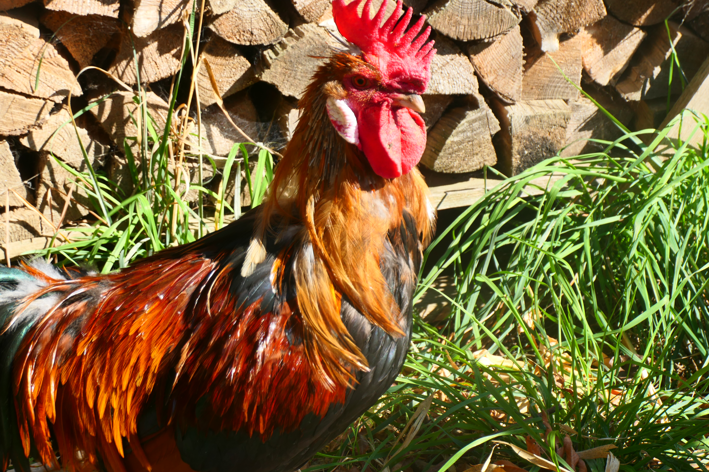
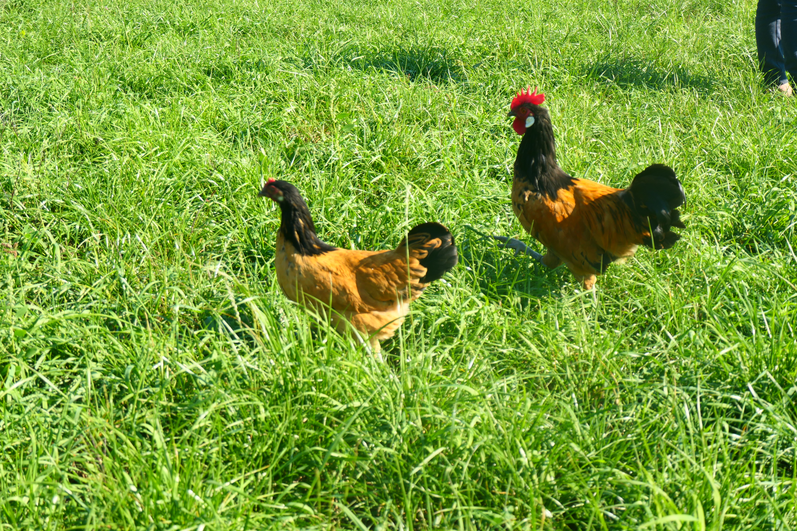

Galerie meiner Hühner
Bilder aus meiner Hühnerzucht
In dieser Galerie möchte ich Bilder meiner Hühner sammeln und verschiedene Rassen aus meiner Zucht vorstellen. Die Fotos sollen einen Einblick in die Haltung und das Aussehen meiner Tiere geben.
MEDT: Bildformate
Bilder sind ein wichtiger Bestandteil moderner Webseiten. Für Webseiten werden häufig die Formate JPG, PNG und WebP verwendet. Jedes Format besitzt unterschiedliche Eigenschaften hinsichtlich Bildqualität, Transparenz und Dateigröße.
| Format | Verwendung |
|---|---|
| JPG | Fotos mit kleiner Dateigröße |
| PNG | Bilder mit Transparenz |
| WebP | Moderne Webgrafiken mit guter Kompression |
Fotogalerie
Die Fotogalerie wird im Laufe des Projektes mit eigenen Bildern meiner Hühner ergänzt.
Fotogalerie
In dieser Galerie möchte ich Bilder meiner Hühner sammeln und verschiedene Rassen aus meiner Zucht vorstellen. Die Fotos geben einen Einblick in die Haltung und das Aussehen meiner Tiere.







Bilder für Webseiten
Bei der Verwendung von Bildern auf Webseiten sollte auf eine passende Bildgröße und ein geeignetes Dateiformat geachtet werden. Zu große Dateien können die Ladezeit einer Webseite verlängern.
Durch die Optimierung von Bildern kann die Dateigröße reduziert werden, ohne dass die Bildqualität sichtbar beeinträchtigt wird.
Fachlicher Bezug zur Medientechnik
Für die Darstellung von Bildern auf Webseiten müssen geeignete Bildformate gewählt werden. Zusätzlich sollten Bilder optimiert werden, damit die Ladezeit der Webseite möglichst gering bleibt.
Dadurch wird die Benutzerfreundlichkeit verbessert und die Seite kann schneller angezeigt werden.
© Atina Rodler 21.04.2026